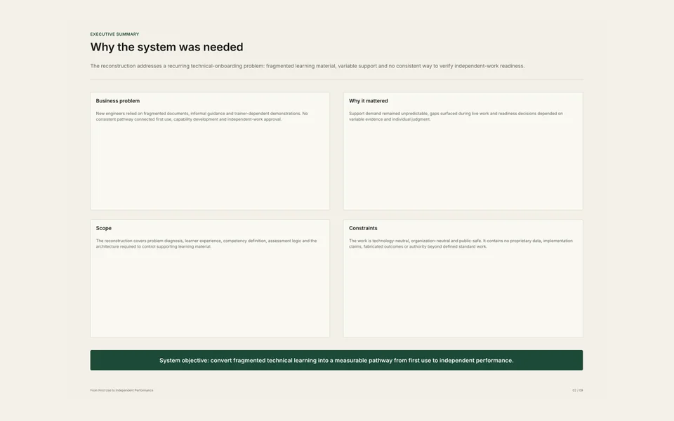

Scope
Standard technical work
The system covers defined repeatable work. Specialist authority, exceptional work and unrestricted approval remain outside scope.
Complete case study
A reconstructed technical-learning system connecting user needs, observable competence, assessment evidence and controlled content.

Context and problem
A generic multinational technical organization uses complex specialist software. New engineers learn through fragmented documents, informal guidance and trainer-dependent demonstrations.
No consistent pathway connects orientation, capability development, assessment and approval for independent standard work.
Scope
The system covers defined repeatable work. Specialist authority, exceptional work and unrestricted approval remain outside scope.
Role
Responsibilities included diagnosis, journey mapping, competency modelling, assessment design, content governance, visual production and quality assurance.
Boundary
No employer, client or software identity; no proprietary workflow, real technical input or measured implementation result.
Research and diagnostic process
Define users, stakeholders, confidentiality rules and the standard-work boundary.
Map fragmented learning, informal support, failure points and business consequences.
Identify actions, questions, support needs, risks, evidence opportunities and handoffs.
Define capability domains, support levels and observable performance.
Specify representative tasks, evidence quality, review and readiness logic.
Control objects, metadata, ownership, versions, lifecycle and traceability.
Architecture and design decisions
The Business Problem Map prevents content production from starting before the operational problem is understood.
The Learner Journey shows where support, practice, evidence and handoffs are required.
The Competency Framework replaces confidence and attendance with explicit behaviour.
The Assessment Framework separates competency, development and readiness decisions.
The Learning Content Architecture keeps materials complete, approved, versioned and traceable.
Stakeholder logic and evidence model
The learner performs representative work; the trainer supports development and records observable evidence.
Senior specialists review technical quality and boundary recognition without replacing documented evidence.
Managers approve independent standard work only when required domains are demonstrated together.
Evidence must be representative, current, observable, repeatable, traceable, authentic, sufficient, relevant and consistent.
Limitations and confidentiality
The case study does not claim a named client engagement, measured savings, implementation percentages, unrestricted technical authority or user testimonials.
All visible content is generic, reconstructed and suitable for public review.
Final value
The value lies in the controlled line of reasoning connecting the business problem, learner experience, competency expectations, assessment evidence and learning content.
Classification
Anonymized reconstruction based on professional experience. All proprietary names, data, interfaces and technical details have been replaced.